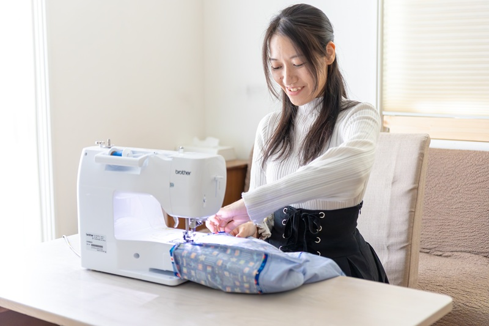
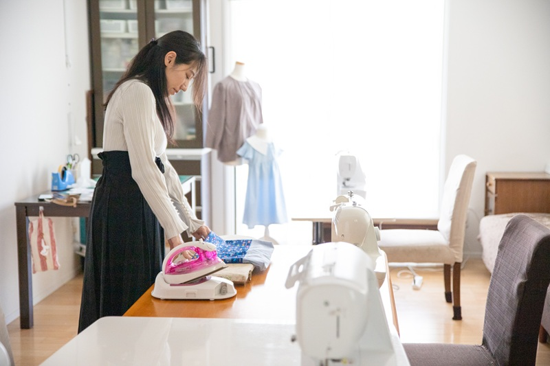

教室と先生
老若男女どなたでも通いやすい教室を目指しています
教室のご案内

駐車場・駐輪場
駐車場は東大通りから反対側（裏側）にございます。ご利用の際は事前にご連絡ください。駐輪場もございます。
先生のご紹介


大島あゆみです。2022年の夏頃よりつくば市の自宅で教室を始めて、これまでたくさんの生徒の皆様と楽しく教室を続けてきました。
先生自身も子育てをしてきた経験があり、現在も３人の男の子と女の子たちを育てながら教室を運営しています。
「皆様に楽しい時間を過ごしていただきたい」という想いが強いことで、準備や片付けを私自身がやってしまうことが多いです。
自分の思い描いたものを作る楽しみを皆様と共有することができればと思っています。
カフェでの出張手芸教室や、他のクリエイターさんとのコラボ教室を不定期で実施することもあります。
ハンドメイド通販・委託販売やマルシェ等への出店経験や、市内カフェにおいてマルシェを主宰した経験もあり物販にも関心があります。
布ナプキンナビゲーター＆アドバイザー取得をするほどの関心もあり、オリジナル作品を作り、国内外で喜ばれるようにすることが目標です。
先生自身も子育てをしてきた経験があり、現在も３人の男の子と女の子たちを育てながら教室を運営しています。
「皆様に楽しい時間を過ごしていただきたい」という想いが強いことで、準備や片付けを私自身がやってしまうことが多いです。
自分の思い描いたものを作る楽しみを皆様と共有することができればと思っています。
カフェでの出張手芸教室や、他のクリエイターさんとのコラボ教室を不定期で実施することもあります。
ハンドメイド通販・委託販売やマルシェ等への出店経験や、市内カフェにおいてマルシェを主宰した経験もあり物販にも関心があります。
布ナプキンナビゲーター＆アドバイザー取得をするほどの関心もあり、オリジナル作品を作り、国内外で喜ばれるようにすることが目標です。